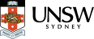
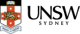

The seL4 Microkit, formerly known as the Core Platform, is an operating system framework on top of seL4 provides a small set of simple abstractions that ease the design and implementation of statically structured systems on seL4, while still leveraging the kernel’s benefits of security and performance. The Microkit is distributed as an SDK that integrates with the developer’s build system of choice, significantly reducing the barrier to entry for new users of seL4.
The seL4 Microkit was developed in collaboration between Breakaway Consulting Pty Ltd and Trustworthy Systems, UNSW, and is now an official seL4 Foundation project, making it part of the seL4 eco-system.